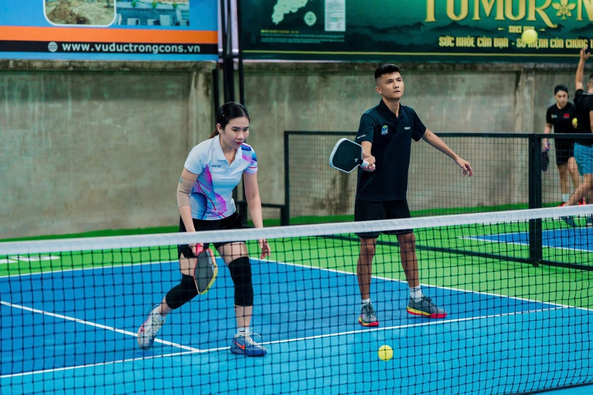

Luật serve — phải biết trước khi tập
Serve sai = mất quyền phát bóng ngay lập tức. 4 điều bắt buộc:
- Tay cầm vợt phải dưới cổ tay khi tiếp xúc bóng
- Điểm tiếp xúc vợt-bóng phải dưới thắt lưng
- Cả hai chân phải sau baseline khi đánh
- Bóng phải rơi vào ô service chéo, không chạm Kitchen
Drop Serve hay Volley Serve?
Drop Serve — thả bóng nảy đất rồi đánh. Không giới hạn góc vợt, không cần đúng điểm tiếp xúc. Người mới bắt đầu bằng kiểu này.
Volley Serve — tung bóng lên và đánh trực tiếp. Kiểu phổ biến nhất khi đã quen tay.

5 bước serve chuẩn
Vị trí đứng
Hai chân rộng bằng vai, chân không thuận hướng về lưới. Thả lỏng vai.
Cầm vợt
Continental grip — cầm như bắt tay, V ngón cái-trỏ trên cạnh trên cán vợt.
Tung bóng
Thả nhẹ từ tay không thuận, ngang hông, hơi lệch về phía vợt. Không tung quá cao.
Đánh bóng
Vung từ dưới lên, tiếp xúc khi vợt dưới cổ tay. Cổ tay giữ cứng, follow-through tự nhiên.
Di chuyển sau serve
Tiến ngay lên Kitchen Line trong 2–3 bước. Không đứng yên ở baseline.
5 lỗi phổ biến nhất
Tay quá caoCổ tay phải dưới thắt lưng — không giống tennis. Đặt tay ngang hông trước khi serve.
Tung bóng không đềuLuyện tung bóng riêng (không cần đánh) cho đến khi bóng rơi đúng điểm 10/10 lần.
Gồng vai, cổ tayLắc tay nhẹ trước khi serve. Hít thở sâu. Căng thẳng = bóng tung tóe.
Đứng yên sau serveTiến lên Kitchen Line ngay — đứng baseline là mất lợi thế chiến thuật.
Serve vào lưới liên tụcAim cao hơn lưới 60–90cm. Có biên độ an toàn mà vẫn vào sân.
Tóm tắt
| Yếu tố | Cần nhớ |
|---|---|
| Điểm tiếp xúc | Dưới cổ tay + dưới thắt lưng |
| Vị trí đứng | Sau baseline |
| Hướng bóng | Chéo sang ô đối diện |
| Sau khi serve | Tiến ngay lên Kitchen Line |
| Người mới | Dùng Drop Serve trước |
Serve là kỹ năng luyện được một mình. 15 phút mỗi ngày — 2 tuần sẽ thấy khác biệt rõ rệt.